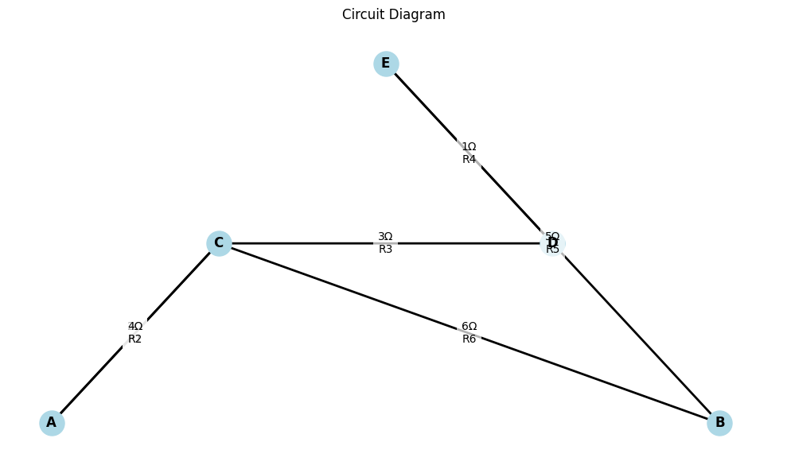
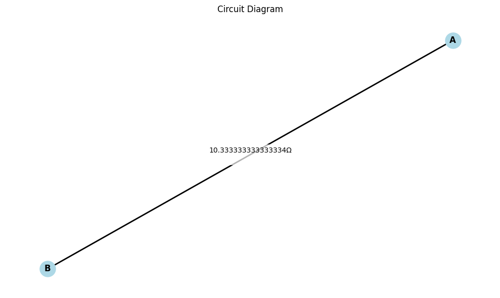

Problem 1: Equivalent Resistance Using Graph Theory
🔹 Mathematical and Algorithmic Foundation
Electrical circuits can be modeled as weighted undirected graphs, where:
- Nodes = circuit junctions
- Edges = resistors (edge weights = resistance values)
Goal: Find the equivalent resistance between two specified nodes (e.g., input and output terminals) by systematically reducing the graph.
✅ Option 2: Advanced Task – Full Implementation
🧠 Step-by-Step Strategy
1. Graph Representation
- Model the circuit as an undirected weighted graph using
networkx. - Each resistor is an edge with weight equal to its resistance.
2. Reduction Rules
- Series: If two nodes are connected by a single path (degree 2), collapse the series:
$$ R_{\text{eq}} = R_1 + R_2 $$ * Parallel: For nodes connected by multiple paths (same start and end), reduce using:
$$ \frac{1}{R_{\text{eq}}} = \sum \frac{1}{R_i} $$
3. Traversal and Simplification
- Use DFS or BFS to identify reduction opportunities.
- Repeatedly apply simplifications until only one equivalent edge remains between the start and end nodes.
🧪 Example Circuit Diagrams and Expected Behavior
| Example | Type | Description |
|---|---|---|
| 1 | Series | Resistors 2Ω and 3Ω between A and B → Result: 5Ω |
| 2 | Parallel | 2Ω and 3Ω in parallel between A and B → Result: \(\frac{1}{\frac{1}{2} + \frac{1}{3}} = 1.2Ω\) |
| 3 | Mixed | 2Ω & 2Ω in parallel, in series with 4Ω → Result: 5Ω |
🐍 Python Implementation
import networkx as nx
def combine_parallel_edges(G):
for u, v in list(G.edges()):
edges = list(G.get_edge_data(u, v).values())
if len(edges) > 1:
total_inv = sum(1 / edge['resistance'] for edge in edges)
R_eq = 1 / total_inv
G.remove_edges_from([(u, v)] * len(edges))
G.add_edge(u, v, resistance=R_eq)
def simplify_series_nodes(G):
changed = True
while changed:
changed = False
for node in list(G.nodes()):
if G.degree[node] == 2 and node not in ('A', 'B'): # Skip terminals
neighbors = list(G.neighbors(node))
r1 = G[node][neighbors[0]]['resistance']
r2 = G[node][neighbors[1]]['resistance']
R_eq = r1 + r2
G.add_edge(neighbors[0], neighbors[1], resistance=R_eq)
G.remove_node(node)
changed = True
break
def calculate_equivalent_resistance(G, source, target):
combine_parallel_edges(G)
simplify_series_nodes(G)
return G[source][target]['resistance'] if G.has_edge(source, target) else None
# Example: Mixed circuit (Parallel + Series)
G = nx.MultiGraph()
G.add_edge('A', 'C', resistance=2)
G.add_edge('A', 'C', resistance=2)
G.add_edge('C', 'B', resistance=4)
R_eq = calculate_equivalent_resistance(G, 'A', 'B')
print(f"Equivalent Resistance: {R_eq} Ω")
 ---
📈 Analysis of Algorithm Efficiency
-
For sparse graphs (typical in circuits), performance is efficient:
-
Series detection: \(O(N)\)
- Parallel merging: \(O(E)\)
-
Can be improved using:
-
Union-find data structures
- Kirchhoff’s Laws and matrix reduction (for advanced cases)
🧩 Conclusion
This approach effectively models and reduces circuits using graph-based methods, automating what would otherwise be a manual and error-prone process for large circuits.